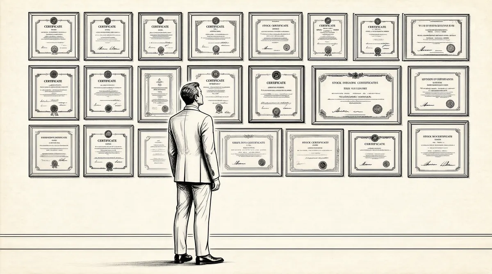

第37章 新闻记者

大概两年后，《华盛顿邮报》正在深入挖掘报道“水门事件”；而在奥马哈，《奥马哈太阳报》的记者们却正惬意地沐浴在曝光儿童城丑闻的荣耀中。对“水门事件”的报道始于1972年6月，当时发生了一起普通的非法闯入案，伍德沃德和伯恩斯坦通过其中一个窃贼携带的支票，竟然追踪到了尼克松竞选连任委员会的成员。通过联邦调查局一位代号“深喉”的秘密线人透露消息，他们对这起丑闻连续报道了好几个月。在当时除鲍勃·伍德沃德外没有人知道他是谁，直到33年后，他的名字才被公布于众。他不断地给这两位记者传送关于总统竞选连任委员会的情报，以及中央情报局和联邦调查局的多位高官给这些窃贼提供资金支持和帮助的情报。但是，其他报纸基本上都忽略了这一丑闻，公众也没有太在意。当年秋天，尼克松以极大的优势竞选成功，连任总统。同时，他坚决否认和非法闯入案有牵连。在五角大楼文件事件上，尼克松领导下的白宫政府已经同《华盛顿邮报》结下了深仇大恨，此时更是对该报大加批驳和威胁，称“水门事件”只是一件“三流的盗窃案”，根本不值一提。尼克松竞选连任委员会的主席约翰·米切尔同时也是尼克松政府的司法部长，他警告伍德沃德和伯恩斯坦，如果《华盛顿邮报》继续报道该事件的话，凯瑟琳会“自讨苦吃，是没有好果子的”。一位同当局有关联的华尔街朋友也向她建议，“不要一意孤行”。
1973年年初，理查德·尼克松的朋友，一位共和党的募捐者反对向《华盛报邮报》在佛罗里达州的两家电视台继续签发执照，这很有可能是出于政治原因，这一挑战威胁到了公司一半的赢利，是个致命的打击。1公司的股票从每股36美元暴跌至16美元。
虽然荣获过普利策奖，虽然“水门事件”中的窃贼已经被判有罪并被送进了监狱，虽然有很多证据显示尼克松政府的多位高官与非法闯入案有染，格雷厄姆仍然在不断地反复掂量，是否报纸正在被利用或者误导。2现在，她的大部分时间和精力都花费在应付这些使人焦头烂额的麻烦上。她的董事长弗里茨·毕比身陷癌症的困扰，身体正在迅速垮掉，3而她现在急需权威人士的支持和帮助。她迅速向董事会的另一位成员安德烈·梅耶求助，他是拉扎德兄弟投资银行的高级合伙人。
梅耶是一个睚眦必报、讳莫如深、欺上瞒下而又残酷成性的人，常常“猛烈抨击诽谤他人”。他以“华尔街银行界的毕加索”和“无比贪财”而著称，被称为20世纪最为伟大的投资银行家；据他的同事称，他是“一个天才的赚钱专家”。4他也是一个有着广泛社会关系的人，曾经警告过格雷厄姆，在“水门事件”上不要一意孤行。他“有能力在危急时刻结交很多人，这样就能激发他们的忠诚，并且在将来给他提供绝好的机会”，拉扎德的一位前主管这样描述他。5他很快就结识了格雷厄姆，并且开始和她一起出入饭店、聚会以及剧院了。
1973年5月1日，毕比去世了。一周后，他的律师乔治·吉莱斯皮（同时也是格雷厄姆的私人律师和顾问），开始处理他的遗产。吉莱斯皮获悉奥马哈城的一位大投资家曾经购买过《华盛顿邮报》的股票，因此，在缅因州的避暑别墅里，他给巴菲特打了个电话，告诉他毕比名下的5万股股票正要出售。巴菲特立即抓住这个机会，全部吃进。
如果价格合适，巴菲特几乎会为伯克希尔–哈撒韦买进所有的报纸。当联合出版社的银行家，《波士顿环球报》的出版商，正在想方设法出售公司股份时，巴菲特打破了他多年来从不购买公开发行股票的惯例，以低价吃进联合出版社4%的股份，使伯克希尔一举成为它最大的股东。他又一口气购买了电话亭报纸公司、斯克里普斯·霍华德以及哈特汉克斯通信公司的股票，这是它位于圣安东尼奥的一家分公司。《奥马哈太阳报》荣获普利策奖，打通了他向新闻界进军的通路，他可以以出版商的身份与同行攀谈。他同《韦尔明顿新闻周刊》的所有人聊天，商谈购买该报的事宜。报纸类股票实在是太便宜了，这是因为投资人没有看到它们的价值，然而报纸的主人们并不是愚昧无知的。巴菲特和芒格不得不同他们竞争，他们整体买进的努力最终成了泡影。
不过，到1973年晚春时节，巴菲特所持有的《华盛顿邮报》的股票已经超过了5%。6因此，他给格雷厄姆写了一封信。她总是害怕失去公司，即使毕比和吉莱斯皮将《华盛顿邮报》的股票分成两种，在市场上公开交易的股票永远都不能威胁到她的控制权，恶意的收购根本不可能发生。7巴菲特在信中告诉她，他拥有《华盛顿邮报》的23万股股票。他的信没有墨守成规写成标准的文件格式，而是以私人信函的口气，自我吹捧他们在新闻出版上的共同兴趣，并且特别强调了《奥马哈太阳报》获普利策奖这件事。这封信这样开头：
这一购买活动对我来说代表着极大的责任和义务——真诚地表达了我们的极大热爱，不仅仅是对《华盛顿邮报》公司，更是对您这位首席执行官。这里特别向您书面保证，我承认《华盛顿邮报》是由格雷厄姆控制并管理的。这对我来说也是再合适不过了。8
然而，格雷厄姆仍然十分恐慌，她四处寻求建议。
“有时，”她手下的一位记者吉姆·霍格兰写道，“她会被江湖骗子的伎俩所欺骗，尤其是如果他们十分擅长愚弄和奉承时。”9她很容易附和别人，并且“很容易被别人的大话打动”，另一个记者这样说。10再者，她出于本能也在追寻妇女的平等——她曾经资助过格洛里亚·斯泰纳姆的《女士杂志》；她也曾经大声斥责过男人，因为每当她寻求专业人员的帮助时，好像所有的社会成员都是男人一样；她也曾经对拒绝批准女孩送报的《华盛顿邮报》执行官大发雷霆。然而，在她的内心深处，她仍然认为男人精通所有的商业活动。因此，当安德烈·梅耶“生气了”，并且告诉她巴菲特对她不怀好意时，她没有忽视他的见解。11格雷厄姆的另外一个朋友鲍勃·阿布德，是芝加哥大学董事会成员，他也警告她小心点儿。她同样很重视他的建议。
安德烈·梅耶真的认为他控制了一切，对于像凯瑟琳这样的女人，他感觉很容易——他甚至会让她感觉到连上厕所这样的事也要事先征得他的同意，他就是这种风格。安德烈多次作为她的新老板来找我，因为我购买了这只股票。这些家伙全都不愿意我进入核心层里，因为这会削弱他们的权力。
她对任何人操纵她的想法都十分敏感，无论是政治原因还是报纸方面的，这是可以理解的。世界上每个人都想利用她，对此，她已经习以为常了。唯一能够制服凯瑟琳的办法就是利用她的恐惧。如果你想彻底改变她，就必须利用她的不安全感。尽管她知道你在利用她，但是她还是无法抗拒。
“她常常犹豫不决，”《华盛顿邮报》的董事会成员阿贾伊·米勒说，“她对人常常反复无常，她会受到威胁和伤害，她在生意上会被某些人压得喘不过气来。”她遇到一些人后，短时间内就会被他们搞得有点儿神魂颠倒，认为他们知道所有的答案。她认为男人知道所有关于商业的事情，而妇女对此一无所知。追根究底，这才是问题的真正所在。她的母亲、她的丈夫都这么告诉她，一次又一次地反复这么对她说。12
格雷厄姆竭尽所能去了解巴菲特。她几乎想不起来他们在两年前还有过短暂的接触。13她和同事们买来几本《超级金钱》，狼吞虎咽地读了关于他的那一章，边读边想，这个来自内布拉斯加的家伙会给他们带来什么呢？那些对巴菲特充满敌意的人，找出了《福布斯》9月1日的那一期，上面有一篇未署名的文章，是关于巴菲特购买圣何塞自来水厂股票的报道。这篇文章打破了《超级金钱》一书所描述的神秘男人身上的光环，在上面投下了一丝阴影。
《福布斯》杂志刊登的这篇文章格调完全变了，与两年前刊登的那些赞誉文章迥然不同。文中写到一位圣何塞自来水厂的股东想转让自己的股票，他去找公司的一位董事，这位董事又把他介绍给了巴菲特。这篇文章暗示巴菲特肯定知道该市正在谋划一次交易来接管自来水厂，而且比他出的价格还要高——仅仅是因为一位董事把一个卖主介绍给了他。他既然有这种关系，那么他肯定知道内情——对吧？文章结尾写道：“……美国证券交易所，以及美国证券交易委员会旧金山办公室正在对此事进行调查和询问。”14
但是，一位董事把一位股票卖主推荐给买主，这并没有什么违法的。15而且，的确还没有达成什么交易。然而，对于那些十分关注他的人来说，他们会发现，这是自从《超级金钱》以来，他的名字再次出现在公众眼中，十分显著。16巴菲特感觉就像猫抓柱子一样。尽管这些报道都没有事实证据，但是如果把它们放在一起组成一系列连续报道的话，就会毁掉他刚刚积累的一世英名。他不是那种暴跳如雷、大喊大叫的人，相反，他十分谨慎和精明。他很聪明，尽管十分生气，也没有轻率地指责杂志，谴责这位匿名记者。他想要获得补偿和清白，因此，他利用这个机会，给该杂志的出版商马尔科姆·福布斯写了一封信，希望引起他的注意。这封信的措辞恰当，探讨了新闻中的一些失误，并且对该杂志多年来在调查报道方面所作的成就大加赞扬——不过很不幸，关于圣何塞自来水厂的报道例外——同时，他也提到了《奥马哈太阳报》荣获普利策奖一事。17同一天，他也给编辑们写了一封措辞严厉的信，没有阿谀奉承，只是陈述事实，表明自己的无辜。
在确信无误之后，《福布斯》杂志发表了更正声明。不过，巴菲特知道几乎没有人会去读这份更正声明的，它肯定无法消除当初报道所产生的影响。因此，他派代理人——忠实的比尔·鲁安去见那些编辑们。不是去抱怨，而是去向他们引荐作为专家的巴菲特，并转告他们巴菲特可以为杂志写一篇关于投资的文章。18然而，这一提议立即被拒绝了。
巴菲特现在有了新的理由——对新闻报道中的偏见义愤填膺——这是根据他的正义感和对新闻的一般兴趣而产生的。记者可以通过推断或者疏忽，没有精确核实，就发布虚假的报道，这快要把他逼疯了。他知道甚至善意的新闻出版机构，也会为了维护编辑部的士气和新闻独立而陷入极度愤怒之中，替自己记者的那些可疑行为辩护。这一姿态，他后来明白了，在《华盛顿邮报》被称为“防御性蹲伏姿态”。19
最终，他只好转而求助于一个非营利组织——全国新闻协会，该组织主要仲裁新闻报道中的违法行为。该协会认为，媒体已经被垄断企业所支配，操控在少数人手中；缺乏竞争意味着新闻自由权利赋予出版商的是“不负责任的权力”。该协会提出要对那些受害者进行补偿，因为他们遭到了“诽谤、歪曲、污蔑以及不公正的嘲讽，或者是记者们偏听偏信忽视了他们的合理意见”。很不幸，这些垄断报纸和操控媒体的少数人没有兴趣刊登新闻协会的裁决，因为这份裁决暴露了他们记者的偏见、粗心大意和不称职。最终，新闻协会还是彻底失败，偃旗息鼓了，因为没人理会它的裁决。一次又一次，那些理应刊载这些裁决的自由而独立的媒体对此置之不理。20
全国新闻协会发起的是一次很有意义的改革运动，也许是有点儿超前了，就像其他许多巴菲特投入精力的事业一样。但是到1973年时，苏珊·巴菲特已经见证了他一次又一次全身心投入的新的改革行动或者想法有时会完全改变他身后的世界。尽管有的人会随着时间的推移而转移兴趣，但是她嫁给的这个腼腆、没有安全感的男人却抓住了一个又一个困扰他的想法。他的爱好十分广泛，从孩提时代收集汽车牌照，一直到现在对新闻媒体的欺诈行为进行改革，然而其中有三个角色一直没有改变过。第一，他是不屈不挠的收藏家，不断扩张他的财富、人脉和影响；第二，他是布道者，在讲坛上传播理念；第三，他是警察，惩治那些坏家伙。
最完美的事业就是能够使他同时集三者为一身：传道、扮演警察，同时又能像收银员一样收钱。而这个完美的事业就是报纸。这就是为什么他会把《奥马哈太阳报》看作一把银勺，而且还想拥有更多的报纸。
但是，他和芒格收购主流都市报的希望全都破灭了。现在，凯瑟琳·格雷厄姆正好是个突破口。她一谈到公司的事就不知所措，摇摆不定，被周围那些人操控着，不断受到打击，正在到处寻找可以拯救她的心腹。尽管她惊惶不安，柔弱无比，但是因为她掌控着《华盛顿邮报》，已经成为西半球最有权力的人之一，而巴菲特总是对这些人有一种强烈的兴趣。
格雷厄姆有点儿怕他，便问乔治·吉莱斯皮他是否十分狡猾。她不能再失误了。几年来，尼克松当局一直在全力打压《华盛顿邮报》。参议院“水门事件”委员会正在举行听证会。伍德沃德和伯恩斯坦已经被列入尼克松的“敌人名单”。最新发现的几盘录音带显示尼克松总统也被牵涉进来了，他之前曾经拒绝交代一些情报，并宣称自己有豁免权，而这些情报正好可以澄清该事件的来龙去脉。格雷厄姆每天都在处理“水门事件”。在一定意义上，她已经把《华盛顿邮报》的命运押在了这一赌注上。
她极其看重吉莱斯皮的意见。他已经为格雷厄姆家族服务多年，是一位值得信赖的老律师。他在卡拉瓦什·斯韦因·摩尔事务所工作长达28年之久，曾经起草过吉恩·梅耶的遗嘱，见证过那位日益衰弱的老人的签名。“他打算接管《华盛顿邮报》。”对于巴菲特她这样说。“凯瑟琳，他不可能接管《华盛顿邮报》的，”吉莱斯皮说，“想都别想，根本不可能。无论他持有多少B股都没有用。他没有权力，如果他持有了绝大多数B股的话，他唯一能做的就是把自己送进董事会。”
吉莱斯皮已经给圣何塞自来水厂的董事长打过电话，确认过巴菲特没有获得任何内部消息。他明确表明不同意安德烈·梅耶的观点。考虑到梅耶的地位以及他和凯瑟琳之间的关系，这样说是冒一定风险的。他告诉她，和巴菲特谈一谈，结识他对她很有好处。21
于是格雷厄姆给巴菲特回了封信。她在口述这封信时，浑身都在颤抖。信中提议他们在加州见一面，因为当年夏天晚些时候她要到那里出差。他热切地表示同意。最后，她出现在了《洛杉矶时报》的办公室里，这是《华盛顿邮报》在西海岸新闻业务上的合伙人。她看起来和两年前没有什么两样：衣着得体完美，毫无瑕疵，短发亮丽而富有光泽，双唇微翘，露着甜蜜的微笑。当格雷厄姆看见巴菲特时，她说，他的“奇特外表令她十分吃惊”。
“在我妈妈的一生中，她最为幸福和苦恼的，”她的儿子唐说，“就是她对品位的高标准。她习惯了上流社会的生活，认为衣着和吃饭都有恰当的方式，所有人都会对此十分注意的。然而到了沃伦这里，她所有的标准都乱了套，而他还一点儿也不在乎。”22他穿得很不得体，衣服好像是从别人那里借来的；长长的头发，好像很久没有理过；走路也不稳当。“他和我见过的任何华尔街的人或者商业大亨都不一样，”她后来写道，“相反，他的举止好像是来自西部地区的农村一样，但是他那不同寻常的古怪特性吸引着我——聪明而又幽默。我从一开始就喜欢上了他。”23
不过在那时，这当然没有显露出来。相反，她惊恐不已，对他和她自己都没有什么信心。
当我第一次见凯瑟琳时，她小心翼翼，还有点儿恐慌。她被我吓坏了，但也对我充满好奇。关于凯瑟琳，有一点很值得称道，她不是那种面无表情、一本正经的人。
巴菲特明白，尽管格雷厄姆到现在已经有了近十年的经验，但是她对商业和金融仍然一窍不通；同时他也知道，她一直认为那些董事和经理们在经营管理上都高她一筹。他告诉格雷厄姆，他认为华尔街没有看到《华盛顿邮报》的真正价值。她的戒备心理慢慢松弛下来，她用贵妇人惯有的语气邀请他几周后到华盛顿拜访她。
沃伦和苏珊于11月4日晚上抵达华盛顿，比约定的见面时间提前了一天。他们乘出租车抵达麦迪逊酒店，正对着《华盛顿邮报》的总部。当他们办理入住手续时，却发现印刷工人工会正在组织罢工活动。由于有传言说这些印刷工人携带着武器，因此，联邦警察正在驱赶这些罢工的印刷工人。骚乱、刺眼的强光和摄像机不断出现，一直持续到拂晓。再加上政治上的打压，此时的《华盛顿邮报》已经到了最危急的时刻，面临着关闭的危险，而这正是工会所希望的。副总统斯皮罗·阿格纽已经受到了刑事调查，20多天前，他突然对逃税的指控供认不讳，然后就辞职了。“水门事件”丑闻已经成了爆炸性的危机。在阿格纽辞职后两周，美国总检察长艾利奥特·理查森和副总检察长威廉·拉克尔肖斯同时辞职，以抗议尼克松总统，因为他下令解雇特别调查人阿奇博尔德·考克斯——他受命深入调查这一丑闻，现在却要被撤职了。不管怎么说尼克松还是下达了命令，这后来以“周六夜间屠杀”而闻名于世。24总统干扰政府司法部门的独立，这是“水门事件”的转折点，在接下来的两周内引发了大批公众对他的反对。国会弹劾总统的压力迅速增加。
在巴菲特抵达后的第一个早上，格雷厄姆同多数经理一起工作到早上6点，连夜赶印第二天的报纸。他们刚拖着疲惫不堪的身体出来，就遇到了巴菲特。在这种场合迎接自己的新股东，她非常尴尬、紧张，不知道接下来的会见会怎么样。不过她已经安排好了午宴，本·布拉德利、梅格·格林菲尔德、霍华德·西蒙斯以及她本人都将出席。
格雷厄姆把梅格·格林菲尔德看作她最为亲密的朋友，并称她是“一个孤独的堡垒……没有人真正了解梅格”。她是《华盛顿邮报》社论版的编辑，身体矮胖，有着一头短短的黑发，以及一张平淡而又严肃的脸。她十分幽默、诚实、坚强、彬彬有礼、端庄谦逊。25
霍华德·西蒙斯是《华盛顿邮报》的主编，他以机智地挖苦取笑格雷厄姆而著称。“霍华德·西蒙斯常常说你不要等死了再写讣告。他是个很棒的家伙，但是有点儿坏。他常常欺负凯瑟琳。”26
“我们一起吃午饭，谈生意，聊媒体的特性。我能看出来，即使她拥有了所有的A股，她仍然会害怕我。我是指，他们的一生都在围绕着股票思考问题，不断进行防御。因此我谈了关于无形资产的摊销如何对媒体造成更大的困难，因为他们为了信誉而付出了很多，如果他们太看重价值评估，就会产生问题。”（注：如果一个公司的账面价值是100万美元，一个买家支付了300万美元，其余的200万美元就是无形资产的价值。）巴菲特竭力使格雷厄姆安心，他称如果要接管媒体公司是非常困难的，因为财务状况会给意欲购买的人带来很大的负担。“接着凯瑟琳开始炫耀了，她说，‘是的，无形资产的摊销给我们也带来了问题’，或者一些类似这样的话。霍华德盯着她的眼睛看着，并且问，‘凯瑟琳，什么是无形资产的摊销？”
那一刻，真是太好了，机会难得。她惊呆了，一动不动。霍华德非常高兴把她问倒了。然后我插话了，给霍华德解释什么是无形资产的摊销。我刚说完，凯瑟琳就说：“对极了！”
巴菲特很喜欢深谋远虑的西蒙斯，他做事简洁明了，常常婉转而又巧妙地击破格雷厄姆的防御工事。格雷厄姆脸上开始露出一丝丝的微笑。“从那一刻起，我们成了好朋友，我是兰斯洛特，那是我一生中最为重要的时刻之一，帮她反败为胜。”27
午饭后，巴菲特同格雷厄姆谈了大概一个小时，然后他再次向她做出书面保证。“我说，‘凯瑟琳，乔治·吉莱斯皮设计的A股给了你绝对的控制权。但是，’我接着说，‘我也知道在这个世界上，控制权对你太重要了，不论你已经得到了什么，你还是会担心的。它是你整个的生命。’然后，我又接着说，‘我要告诉你，即使这些牙齿对你来说看起来像是小红帽中的狼牙，它们真的只是婴儿的乳牙，并且我们还要把它们拔出来。在今天下午交易之前，我们书面确定一些事情，如果没有你的同意，我不会再多买进一股。’我知道这是唯一可以使她安心的办法。”当天下午，巴菲特用10627605美元购买了该公司12%的股份，同时和格雷厄姆签署了一份协议，保证没有经过她的同意不再购买《华盛顿邮报》的股票。
当天晚上，巴菲特夫妇参加了格雷厄姆的著名晚宴。这一次，有40位客人为沃伦和苏珊接风洗尘。尽管格雷厄姆常常没有安全感，但她仍被认为是华盛顿最伟大的女主人，毕竟她知道如何帮助别人放松和享受。那天晚上，尽管她十分劳累，甚至还想取消这一晚宴，“她为我举办了一场小的宴会，那是她的酬谢方式。而且，她举办晚宴时，可以请到任何她想请的人。任何人，包括美国总统。”
“她到世界各地旅行，因此她会到处找机会宴请别人，”唐·格雷厄姆说，“如果她去了马来西亚，正好总理也在那里，她就会宴请他。大使会查一查他们上次做了什么，发现总是在格雷厄姆夫人家中吃饭，那么这一次他们也会这么做。有人要出书了，有人要过生日了，她都会设宴款待，因为她喜欢宴请别人。”格雷厄姆用宴请作为结交新朋友的方式，同时也给人们彼此认识的机会。“她会容忍各个政府的人员，”唐说，28尤其是理查德·尼克松政府的。除国务卿亨利·基辛格外，格雷厄姆还交到了几个朋友，基辛格不得不为同她交往而辩解。
当我和苏珊在麦迪逊酒店时，大概在5点左右，突然有人悄悄地通过门缝塞进来一些东西，是关于这次宴会的，我在数周前就被邀请了。最下面写着“请着正装”。不用说，我是没有的。因此这个来自内布拉斯加的可怜家伙，只能穿着商务装出席宴会了。他要参加一个为他接风的正式宴会，现在他却是唯一一个没有穿礼服打黑领结的家伙。于是我慌忙给她的秘书打电话。
她的秘书是个非常善良的女孩。她说，好吧，让我们想想办法吧。我立即走上街去找找看哪家商店仍然营业，好租借一件礼服。但是很不幸，没有一家开门。
格雷厄姆的助理莉斯·希尔顿给当地另外一家商店打电话，终于找到了一身合适的礼服。29
巴菲特夫妇从麦迪逊酒店出发，出租车从大使馆路一栋栋的官邸中穿梭而过，然后驶向Q大街，从历史上著名的橡树山公墓穿过，菲利普·格雷厄姆就安息在这里。在拐角处，他们穿过一排建造于19世纪的别墅群，每座都带有修剪整齐的花园。那是11月初，树叶闪耀着黄褐色和金色的光辉。出租车开进乔治敦就像穿过边境进入了一个殖民时代的城镇。汽车驶入公墓的一角，开始穿行于敦巴顿橡树园树木茂密的小山上，这是一片10英亩的联邦财产，曾经举办过成立联合国的筹备大会。30
出租车在拐角处向左一转，从两根石柱中间穿过，眼前立刻呈现出一片惊人的景象。出租车开始沿着一片铺满白色鹅卵石的小道颠簸前行，巴菲特夫妇抬眼看去，只见远处一座宏伟的乳白色别墅——三层高，乔治王朝时代的风格，绿色的双坡屋顶——坐落在一片广阔的草地之中，一直延伸到乔治敦的敦巴顿岩石的顶上。因此这座别墅可以俯瞰到整个公墓。在右面，穿过山下一片浓密的树林，不远的地方就是巴菲特位于春谷的老房子。再远一点儿就是邓雷镇，当年巴菲特在威彻斯特县上学时曾经在那里送过报，从西尔斯商店偷过高尔夫球。
格雷厄姆在正门迎接巴菲特夫妇，并把他们带到其他的客人当中，他们正在客厅喝鸡尾酒。乳白色的墙上挂满了亚洲的艺术品，这都是她母亲的收藏品，蓝色天鹅绒的窗帘，还有雷诺阿的油画和阿尔布雷特·丢勒的版画。格雷厄姆开始向其他客人介绍巴菲特。“她把我光辉的一面告诉了他们，”巴菲特说，“她想尽一切办法使我感觉舒服，然而我却感觉非常不舒服。”
他从来没有参加过这样正式而豪华的晚宴。当鸡尾酒会结束后，他们穿过大堂来到一个巨大的餐厅，这是格雷厄姆举行那些著名宴会的地方。青铜烛台上闪耀着锥形的烛光，与镶板的墙相映生辉，这使得巴菲特感觉更不自在。这种布置比客厅的甚至更加吓人。圆圆的核桃木餐桌上摆放着水晶烛台和纹章瓷，闪闪发光，不过格雷厄姆所邀请的客人使得这些壮丽的景色全都黯然失色。任何时候，这里都能挤满一群达官显贵，包括美国总统、外国领导人、外交官、政府高官、两党的国会议员、大律师，以及她的那些多年好友——埃德·威廉姆斯、斯科蒂·赖斯顿、波莉·威斯纳，31还有许多像巴菲特夫妇这样的人，因为各种各样的原因，只要适合这一场合或者她很感兴趣，就会被邀请来。
巴菲特发现紧挨着自己的是埃德蒙·马斯基的妻子简，一个再合适不过的晚宴搭档，因为巴菲特曾经在奥马哈招待过她的丈夫。在他的另一边是芭芭拉·布什，其丈夫是美国驻联合国大使，很快将转任美国驻北京联络处主任，这是一个重要的职位，在新中国和美国重建外交关系中具有举足轻重的作用。格雷厄姆按了一下铃，示意厨房的仆人上菜，仆人们开始在古老的乔治时代的桌子旁不断穿梭。沃伦尽量让自己不对这些繁缛礼节感觉目瞪口呆。“苏珊坐在另一处，紧挨着某个参议员，他不断挑逗她，把手放在她的腿上。而我，却像是要死了一样，因为我不知道对这些人说点儿什么。芭芭拉·布什真是再好不过了，她能看出来我非常不自在。”
仆人开始按照美国版的俄罗斯方式上菜。第一道菜后是一道鱼，然后是主菜，全都盛在盘子里，客人自己取。一道道的菜进行着，倒酒的声音夹杂在这些华盛顿人的交谈声中。仆人们不断送上或拿走一些不常见的高档银质器具，如鱼刀等。仆人端上来的菜，他一点儿都没动，倒的酒也一口没喝，他发现这顿饭更为复杂和令人生厌。格雷厄姆的其他客人都非常放松和舒服。到了上甜点时，巴菲特已经完全崩溃了。接着又是咖啡，他仍然没有喝。到了晚会的最后一刻，他的不自在已经成了恐惧，因为格雷厄姆站起来，向她的主宾发表了一番祝酒词。她肯定是事先写好的，祝酒词风趣诙谐，优美精练，专门针对主宾而定。她在说话时口齿清晰，非常富有个人魅力，只不过有点儿缺乏自信。而主宾也应该站起来回应这一祝酒词。
“我根本没有勇气站起来发表祝酒词，而我又必须这样做，我完全把它搞砸了。我感觉太不舒服了。我甚至想呕吐，真的是这样。我无法站在那里，面对着一半的客人去讲话。我不擅长这种事。”他一心想着逃离。后来，他和苏珊终于可以说再见了。他们感觉在他们走后很久，乔治敦的人仍会继续嘲笑他这个来自内布拉斯加的乡巴佬。
当我们要离开时，那位参议员仍然在恭维苏珊，他十分专心和认真地向她介绍如何去参议院，怎么到他的办公室找他。他边走边说，太过于专心了，以至于打开一个卫生间的门并走了进去。这就是我在华盛顿的登场亮相。
尽管格雷厄姆夫人身边的上流社会使巴菲特十分不自在并备受打击，但是他从来没有掩饰过自己的热情和兴趣。因此，很快苏珊·巴菲特就发现，她的丈夫对这个世界有着更多的需要。
[1]兰斯洛特，SirLancelot，亚瑟王圆桌骑士中的第一勇士，他与王后格温娜维尔的恋情导致了他与亚瑟王之间的战争。——译者注
[2]芭芭拉·布什，未来的小布什总统的妈妈，老布什总统的夫人。——译者注